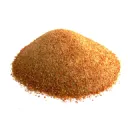
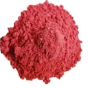

Perca peso sem perder saúde
O tratamento Redufit é um método inovador de emagrecimento que já virou febre em muitas cidades e está revolucionando o mercado de emagrecimento.
-
Queima gorduras
Absorve as moléculas de gordura dos alimentos ingeridos, facilitando para o organismo o gasto de energia e a queima de gordura.
-
Acelera o metabolismo
Redufit acelera o metabolismo, aumentando drasticamente o gasto de energia e facilitando o emagrecimento.
-
Controla o apetite
Os ingredientes presente na fórmula de Redufit proporciona sensação de saciedade moderando o apetite e compulsão por doces.
-
Reduz barriga e flacidez
Por queimar gorduras, Redufit proporciona a perca de peso rápida sem efeito sanfona além de deixar a pele com mais firmeza.
Porque você devo usar Redufit?
O Redufit é um emagrecedor termogênico que se propõe em estimular a regulação do intestino, a inibição da fome, a queima passiva de gordura, o controle do apetite, causando assim a saciedade, e a desintoxicação do corpo. Com esse emagrecedor você potencializa seus resultados na busca de um corpo magro e saudável.
Nós adquirimos os compostos 100% naturais mais raros que foram cientificamente COMPROVADOS para VOCÊ aproveitar o máximo de nossos benefícios. Combinamos em uma fórmula inovadora que agora está se tornando febre no Brasil.
Fórmula exclusiva e diferenciada
-
Spirulina
Eleita pela ONU, a Organização das Nações Unidas, como o melhor alimento para o futuro da humanidade, considerado o mais completo do planeta por ser fonte de proteínas, aminoácidos, minerais, vitaminas e antioxidantes. Além disso, controla a saciedade, pois é um poderoso inibidor de apetite.
-

Quitosana
Fibra capaz de se conectar com a gordura no trato digestivo, evitando, que possa ser absorvida pelo corpo e elimina partículas de gordura para fora do corpo pelas fezes.
-
Psyllium
Uma fibra poderosa capaz de controlar o apetite e diminuir a absorção de colesterol, além de ser uma inibidora do acúmulo de gorduras, tanto no sangue, como nos órgãos. Segundo a OMS, Organização Mundial da Saúde, pode ser considerado um laxante seguro e muito saudável para o intestino.
-
Ágar-ágar
O ágar-ágar proporciona muitos benefícios à saúde. Cerca de 94% de suas fibras são solúveis em água e o seu consumo frequente ajuda a regular o funcionamento do intestino. Sua alta concentração de fibras solúveis aliada à sua baixa quantidade de calorias proporciona sensação de saciedade, ajuda a regular o intestino e contribui para o emagrecimento.
-
Guaraná em pó
O guaraná está diretamente relacionado com a diminuição do apetite o que é ótimo para quem está em uma dieta para perder peso! Isso se deve ao chamado efeito termogênico, que nada mais é do que um processo que aumenta a energia gasta durante o dia e cria um cenário favorável para a queima de gordura acelerada o que acontece, principalmente a noite.
-

Picolinato de Cromo
Ajuda emagrecer, pois ajuda na redução da glicemia, ganho de massa muscular e perda de peso, principalmente na região abdominal. Ajuda na compulsão e aumenta a saciedade.
Nossos produtos sendo fabricados
Quem comprou, usou e aprovou!
No seu pré-lançamento mais 121 mil pessoas tomaram o Redufit. Nos orgulhamos da nossa taxa de 97,6% de satisfação de nossos clientes.
O que a Mídia fala do Redufit?
No seu pré-lançamento mais 121 mil pessoas tomaram o Redufit. Nos orgulhamos da nossa taxa de 97,6% de satisfação de nossos clientes.
-
"Médicos e pesquisadores se surpreendem com eficácia de composto natural na melhoria na redução de peso e corte de apetite."
-

“Encapsulado natural composto de ativos eficazes contra apetite voraz e gordura localizada tem feito a alegria de muitos usuários”
-
“Paulista muda completamente sua rotina após conhecer composto que ajuda a reduzir o apetite e elimina gordura dormindo.”
É a sua primeira compra na internet?
Não se preocupe, nosso site é 100% seguro, empresa confiável e entrega garantida.
-
Escolha o tratamento
Faça a escolha do tratamento que mais combina com você.
-

Pagamento seguro
Selecione a opção de pagamento no cartão ou boleto.
-
Entrega garantida
Receba em casa seu produto com toda a comodidade.
-
Dados protegidos
Plataforma segura e seus dados não serão compartilhados.
Separei para você as perguntas mais frequentes por clientes
Quem tem hipertensão ou diabetes pode usar suplemento para emagrecer?
Pode sim, o Suplemento para emagrecer da Redufit é 100% natural e não causará nenhum tipo de efeito colateral.
Se eu parar de tomar o suplemento para emagrecer eu volto a engordar?
Não, nosso produto não tem efeito sanfona, porém é aconselhável manter uma alimentação equilibrada e exercícios.
Posso tomar suplemento para emagrecer sem fazer atividade física?
Sim, porém a prática de atividade física e uma alimentação saudável potencializa ainda mais os resultados do suplemento para emagrecer Redufit
Quantos KG consigo emagrecer com o Redufit?
Os resultados variam de pessoa para pessoa, mas com Redufit você já consegue obter e ver diferença já nas primeiras semanas de uso.
Por quanto tempo devo usar?
É recomendado o tratamento de 3 ou 5 meses para obter os melhores resultados. No Entanto algumas pessoas relatam melhoras consideráveis nas primeiras semanas.
Existem efeitos colaterais?
Não existe nenhum efeito colateral com o consumo do produto, e qualquer pessoa pode tomar e aproveitar seus benefícios. Porém, gestantes, crianças e pessoas enfermas ou que fazem uso contínuo de algum medicamento devem consultar um médico antes de iniciar o consumo.
tasQuais os efeitos do Redufit?
Redufit possui uma ação emagrecedora, atuando na queima de gordura, desintoxicação do corpo, auxiliando na redução do inchaço do seu corpo, aumentando sua disposição e fazendo você emagrecer de forma rápida e definitiva.
Como devo usar o Redufit?
O Redufit deve ser tomado diariamente, 2 cápsulas por dia, preferencialmente antes das refeições. Recomendamos o consumo de no mínimo 2 litros de água por dia e o tratamento de no mínimo 3 meses para resultados surpreendentes.
Qual o prazo de entrega?
O prazo médio de entrega para o Brasil é de 5 a 20 dias úteis. Dependendo do tipo de frete selecionado. O produto só é enviado após a confirmação do seu pagamento pela administradora do seu cartão de crédito ou após a confirmação do pagamento do boleto.
Vai funcionar pra mim?
Sim! O Redufit oi testado e aprovado em grupos de pessoas com diferentes necessidades e pesos. Usando da forma que recomendamos, o Redufit irá funcionar. Lembrando que o resultado pode variar de pessoa para pessoa.
É liberado pela ANVISA?
Sim! Devido à sua composição 100% natural, o Redufit é liberado pela Anvisa (Agência Nacional de Vigilância Sanitária) nos termos da RDC 240 de 26/07/2018, e passou por rigorosos testes. É 100% seguro para o consumo da população brasileira, em toda sua composição.
O Site é seguro?
Esse site é BLINDADO e 100% protegido!
Utilizamos a plataforma de pagamento para processar todos os pagamento. É uma das maiores
plataformas de pagamento online da América Latina e utiliza os mais avançados recursos de
segurança para Pagamentos Online disponíveis no mundo.
Suas informações pessoais são sigilosas e criptografadas no momento do pagamento (você está
completamente segura).